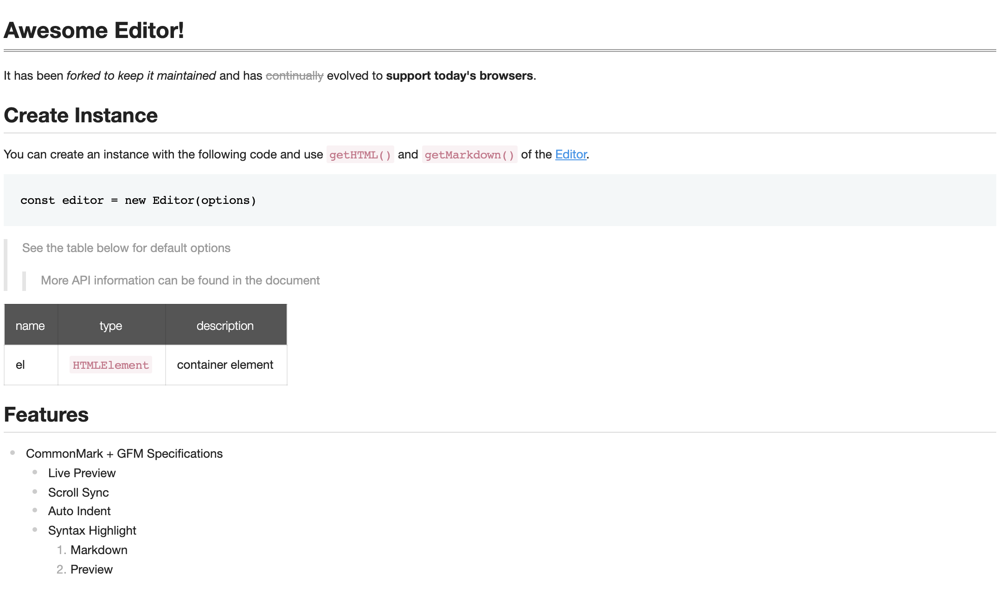

UnderFlow provides a viewer for showing markdown content without loading the editor. The viewer is much lighter than the editor.
You create a viewer the same way as an editor (see Getting Started).
Add the element that the viewer will be created in.
...
<body>
<div id="viewer"></div>
</body>
...
The viewer is the Viewer export of the @liquid-js/underflow/viewer entry point.
import { Viewer } from '@liquid-js/underflow/viewer'
Import the contents stylesheet.
import '@liquid-js/underflow/styles/viewer.css'
Create an instance with options, then call the viewer's API on it.
const viewer = new Viewer({
el: document.querySelector('#viewer'),
initialValue: '# hello'
})

The basic option is initialValue, the initial markdown content; the viewer is as tall as its content.
All options are documented in the type definitions (ViewerOptions in @liquid-js/underflow).
If your page already loads the editor, Viewer is also exported from @liquid-js/underflow, or you can create a
viewer with Editor.factory() and the viewer option.
import { Editor } from '@liquid-js/underflow'
const viewer = Editor.factory({
el: document.querySelector('#viewer'),
viewer: true,
initialValue: '# hello'
})